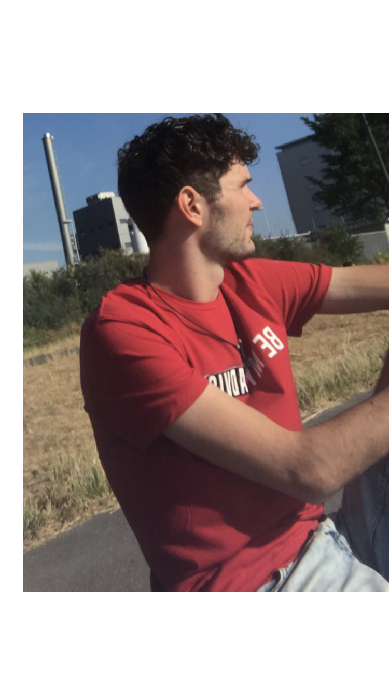

Name:
Simon Geiger
Geboren:
15.11.1996
Geschwister:
1 Bruder
Ich mag:
Musik, Auflegen, Sport, Kochen, Reisen
zum runter kommen:soundcloud werbung:grauzone
Mein Studium:
Studiengang:
OMB A
Semester:
2
Warum dieser Studiengang:
Wollte was mit Medien machen, für die HDM hats nicht gereicht:D aber ich bin zufrieden